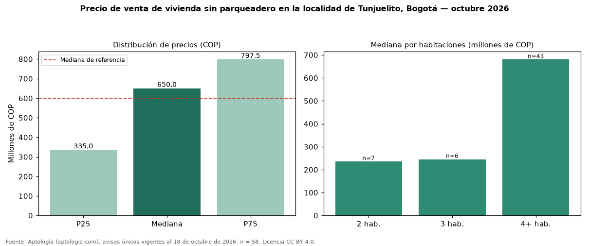

Precio de venta de vivienda sin parqueadero en la localidad de Tunjuelito, Bogotá — octubre 2026
COP 650 millones es la mediana de venta de vivienda sin parqueadero en la localidad de Tunjuelito, Bogotá, según 58 avisos únicos. Eso es 8 % más que la mediana de toda la oferta de venta en la localidad de Tunjuelito, Bogotá (COP 600 millones). Frente a los avisos con parqueadero del mismo grupo (COP 600 millones, n = 134), la diferencia es de +8 %; por metro cuadrado, +37 %. En todo Bogotá, la misma combinación tiene mediana COP 292 millones (+123 %). Por metro cuadrado, la mediana es COP 3.869.748/m² (+29 % frente a COP 3.000.000/m²), puesto 18 de 19 localidades comparables. El rango intercuartílico va de COP 335 millones a COP 798 millones (razón 2,4). Por habitaciones: 2 habitaciones, COP 235 millones (n = 7); 3 habitaciones, COP 245 millones (n = 6); 4 o más habitaciones, COP 680 millones (n = 43). Datos abiertos CC BY 4.0 de Aptología; fuente y búsqueda de inmuebles: https://www.aptologia.com/arriendo-parqueadero-moto/bogota. Archivos: PDF de 2 páginas, CSV con las cifras y gráfica PNG.

| Avisos únicos | 58 |
|---|---|
| Percentil 25 | COP 335.000.000 |
| Mediana | COP 650.000.000 |
| Percentil 75 | COP 797.500.000 |
| Mediana por m² | COP 3.869.747 |
Fuente: avisos vigentes de portales inmobiliarios recopilados por Aptología, deduplicados (mínimo 30 avisos únicos por celda). Precios pedidos, no cerrados. Fecha: 2026-10-18.